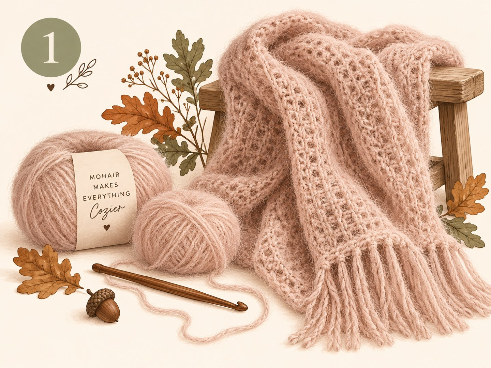
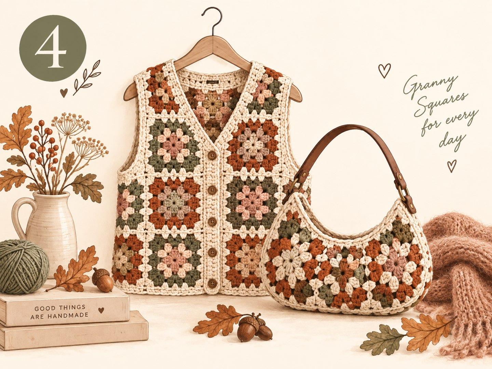
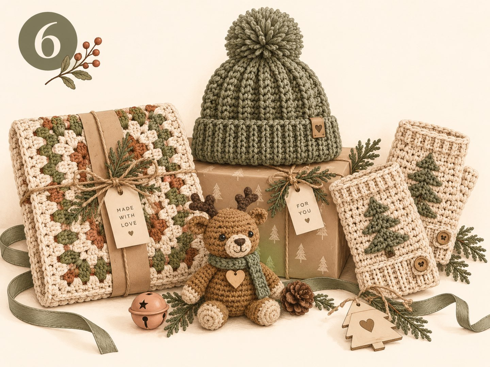

Crochet Trends Fall 2026: The 6 Biggest Trends for the Cozy Season

In short: these are the crochet trends for fall 2026
In fall 2026, we're crocheting whatever is warm, soft and made to last. The six biggest trends:
- Mohair and fluffy yarns – a cloud-like look that forgives small mistakes
- Oversized cardigans and ponchos – relaxed fits made for layering
- Flat, modern cable patterns – graphic instead of bulky
- Granny squares as fashion – vests, jackets and bags made of squares
- 3D stitches for fall decor – first and foremost the crocheted pumpkin (see the pattern)
- Crocheting holiday gifts early – placemats, hats, wrist warmers, amigurumi
Colors: earthy neutrals (cream, beige, brown) with targeted accents like muted teal or sage green.
The days are getting shorter, the tea is getting hotter again – and for me, the most beautiful crochet season of the year is starting now. After a summer full of airy tops and mesh bags, things can finally get warm and a little fluffy again. I took a look at what designers, yarn makers and the crochet community on TikTok, Instagram and Pinterest are excited about right now. Here are my six favorite trends – each with a project idea, a yarn tip and the difficulty level.
1. Why is mohair so popular in fall 2026?

Mohair and other fluffy yarns create a soft, cloud-like look that makes even simple stitches look elegant. Small irregularities disappear into the fuzz – ideal if your stitches aren't quite even yet.
- Project idea
- Lightweight sweater vest, scarf or hat
- Yarn tip
- Hold mohair double with a smooth merino or cotton yarn
- Level
- Beginner to advanced
Tip: Mohair is hard to frog (unravel). Crochet a gauge swatch before you start the big project.
2. Oversized cardigans and ponchos: how do you crochet them without making them too heavy?

Big, cozy jackets to snuggle into are the fall classic – this season with dropped shoulders and a deliberately relaxed fit. Crocheted ponchos and balaclava sets of hat and scarf go perfectly with them.
- Project idea
- Boxy cardigan made of rectangles, poncho, balaclava
- Yarn tip
- Medium-weight merino blend instead of extra-bulky yarn – otherwise the piece gets heavy and stiff
- Level
- Advanced beginner
3. Can you crochet cables? Yes – and flat ones are trending right now

Cables are familiar from knitting – in crochet they're made with post stitches. What's new is the flatter, more graphic version: it looks modern and is less bulky than classic Aran cables.
- Project idea
- Hat, wrist warmers, sofa blanket
- Technique
- Front and back post double crochet, crossed
- Level
- Advanced
4. Granny squares as fashion: what can you make with them?

The granny square has truly arrived in fashion. Individual squares become vests, jackets, skirts and bags. For fall, they look especially lovely in warm earth tones with one bold pop of color.
- Project idea
- Granny square vest or half-moon bag
- You need
- Magic ring, chains and double crochet – nothing more
- Level
- Beginner
5. 3D stitches: why is everyone crocheting pumpkins right now?

This fall, crocheted pumpkins with sculpted ribs are everywhere on TikTok and Instagram. The sculpted ribs don't need any complicated technique: single crochet worked in the back loop creates the texture, and a piece of yarn cinches in the typical pumpkin segments. Small decor projects like these are done in one evening – and a group of three pumpkins in different sizes and colors looks lovely on any table.
- Project idea
- Pumpkins in three sizes, fall leaves, acorns
- Pattern
- How to crochet a pumpkin – free, in three sizes
- Yarn tip
- Cotton for crisp outlines, chenille for a velvety look
- Level
- Beginner
Make your own: My free pumpkin pattern shows you step by step how to turn a simple rectangle into a ribbed pumpkin – no rounds and no increases, in three sizes from approx. 8 to 15 cm. The perfect first fall project.
6. When should you start crocheting holiday gifts?

Now! Many people in the community start their handmade gifts as early as September. If you crochet about one small project a week from now on, you'll comfortably have several gifts ready by December.
- Project ideas
- Placemats, hats, wrist warmers, small amigurumi, potholders
- Level
- All levels
Little gift idea: Crochet bag charms are quick to make and always a hit. In the post Crochet Bag Charms you'll find a free pattern for a mini mushroom – and a small pumpkin from the pumpkin pattern makes a perfect matching charm.
All crochet trends for fall 2026 at a glance
| Trend | Typical project | Level | Time needed |
|---|---|---|---|
| Mohair & fluff | Sweater vest, scarf | Beginner+ | medium |
| Oversized cardigan / poncho | Boxy cardigan | Adv. beginner | high |
| Flat cables | Hat, blanket | Advanced | medium–high |
| Granny squares | Vest, bag | Beginner | medium |
| 3D stitches | Pumpkin decor | Beginner | low |
| Holiday gifts | Placemats, amigurumi | all | low per piece |
Which colors are trending in crochet for fall 2026?
Earthy neutrals like cream, beige and brown form the base. They're paired with targeted accents: a muted teal, sage green or one single bold pop of color. Tone-on-tone looks elegant and calm, while a contrast brings the piece to life.
Conclusion: cozy, textured, sustainable
Crochet in fall 2026 is all about favorite pieces that last. Instead of fast fashion, we're crocheting pieces with texture and character – and happily using up leftover yarn from our stash along the way. If you want to get started right away: the crocheted pumpkin is the perfect project for a cozy evening.
What about you? Which trend will end up on your hook next? Tell me in the comments or show me your project on Instagram! 🧶
Frequently asked questions about crochet trends for fall 2026
What are the crochet trends for fall 2026?
The biggest crochet trends for fall 2026 are fluffy yarns like mohair, oversized cardigans and ponchos, flat, modern cable patterns, granny squares as fashion pieces (vests, jackets, bags), 3D stitches for fall decor like pumpkins, and crocheting holiday gifts early.
Which colors are trending in crochet for fall 2026?
Earthy neutrals like cream, beige and brown form the base. They're paired with targeted accents, for example a muted teal, sage green or one bold pop of color. Tone-on-tone looks elegant, while a single accent brings the piece to life.
Which crochet trend is good for beginners?
Granny squares and small 3D decor like crochet pumpkins are ideal for getting started. For granny squares, all you need is a magic ring, chains and double crochet. The pieces are small, quick to finish and can later be joined into vests, bags or blankets.
Which yarn is best for fall crochet projects?
For cardigans and ponchos, soft merino blends or mohair held together with a smooth yarn work well. For decor like pumpkins, cotton is a good choice, and chenille and plush yarns are popular for pillows and amigurumi. For oversized pieces, choose a medium-weight yarn so the piece drapes nicely and doesn't get too heavy.
When should you start crocheting holiday gifts?
Ideally in September or October. If you crochet about one small project a week from now on – for example placemats, hats, wrist warmers or amigurumi – you'll comfortably have several gifts ready by December.